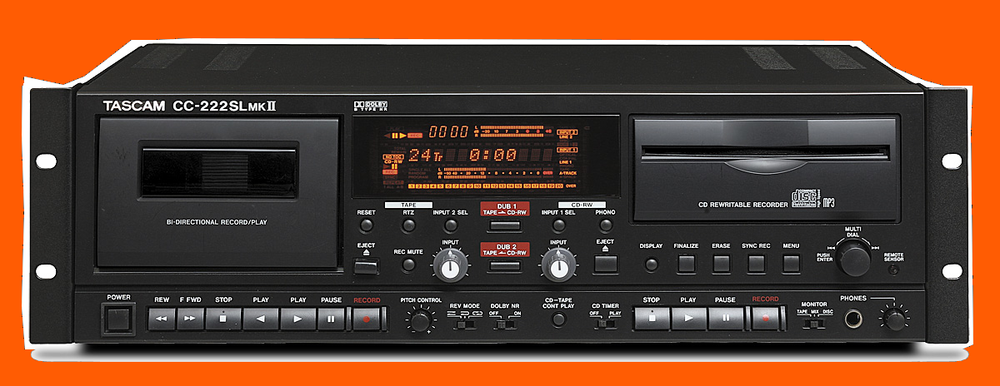

ABOUT
Tapedub is an audio cassette duplication lab for small productions of
music-cassettes runned by Sara Valentino.
We offer tape duplication for record labels, bands and other
audiophiles.
We believe that musicassette can be still a great format for music
reproduction.
A music tape is extremely portable, has flexible length - from 10 to
100 minutes - that allow to pack long albums in one single unit.
It leaves your creativity completely free, there is no limit in terms
of design.
SERVICE

We offer two different cassette duplication systems, and two tape
types, in order to serve any kind of demand and budget.
Our dubbing system is based on high quality Tascam, Sony and Kaba
equipment.
We offer real-time and high speed duplication.
With graphics parts as cover and label, you are free to customise your
tapes.
Your artwork can fit the standard J-Card to a J-Card + 5 flaps.
New graphics ideas are more than welcome.
Don't hesitate to contact us.
Get more infos about our process, get a quote and place an order here.
Worlwide shipping available!
OUR CLIENTS
Samurai Music Group
Carharrt
Semantica Records
Analog Africa
Altered Soul Experiment
Ocke Weeda (Rush Hour)
Dengue Dengue Dengue
Into the Light
Sculdubuldu
Mastermindrec.
SUPERB Recordings
D O T M
Polaire de Cloù
LowMoneyMusicLove
Empty space collective
NYEGE NYEGE TAPES
Transuranic Heavy Elements
Angmar
Belong records
Detroit Underground
Average Negative
MAUKOOK
FOREVER UTD.
MISM records
Etoka Records
Oqko
Concrete Warriors
3th-records
Solune
Pattern//Select
Paesaggi Records
Natural Sciences
Superluminal
Protofuture
Golden Mist Records
tolkewitz records
DISPAIR
Geen Toerist Meer
Data Airlines
Fridolin Zoo
Mountainking
imputor
Mørkt Kapittel
Marlais
Raw Culture
CyberOctopuses
Black Boys On Moped
DAAR
Noctilucant
La Maison Venturi
SHOP
tech specs
Mastering for cassette
- The peak level can be at -1dBFS
- The RMS level should be maximum 12dbs in order to avoid tape overload. However it is strictly related to the genre of music and the frequency response of it.
- Consider that below 40hz and over 18khz the frequency response of tape is very limited.
- Around 250hz to 300hz and about 1000hz are the hottest spot in tape recording. Therefore these frequencies tend to distort easier.
- Preferred format: .Wav - 44.100
- Highly recommended: In order to get the highest quality sound, we provide mastering for cassette. Every track will be mastered in a analog chain, and optimized for the cassette format, paying attention on each part of your mix and reducing the artefacts of the translation on the tape master.
Audio Source
- Audio Files as 2 separated tracks: ( A Side and B Side)Please send your audio files at least 20 seconds shorter of your tape length (example= max length: 29.39min/side for a C-60 tape)
- Master Cassette: Ferric, Chrome or Metal type - it should be the same length
- CDr Master: Submit one CD with just 2 tracks - A Side and B Side
- DAT, 1/4" Tape or USB stick please contact us
Duplication System
- Standard, the best way to reproduce a wide frequency response, reaching clear and detailed high end and warm bottom end with a low noise floor.
- Lo-Fi, cheaper and faster, the sound quality is still good, the noise floor is a slightly higher. Suggested for disto/noise music or Lo-Fi material. For instance, not really suitable for classical or extremely dynamic music.
- Hi-Fi the lowest noise floor you can get on tape and very wide frequency response.
Tape Type
- Ferric: warmer sound, punchy low end, a bit of limitation on the high end, the best choice for cassette sound lovers. Special lenghts might be requested.
- Chrome: very detailed reproduction, lower noise, same frequency response of CD, the best for Hi-fi reproduction.
Turnaround time
3-4 weeks - on body printing
orders 4-5 weeks